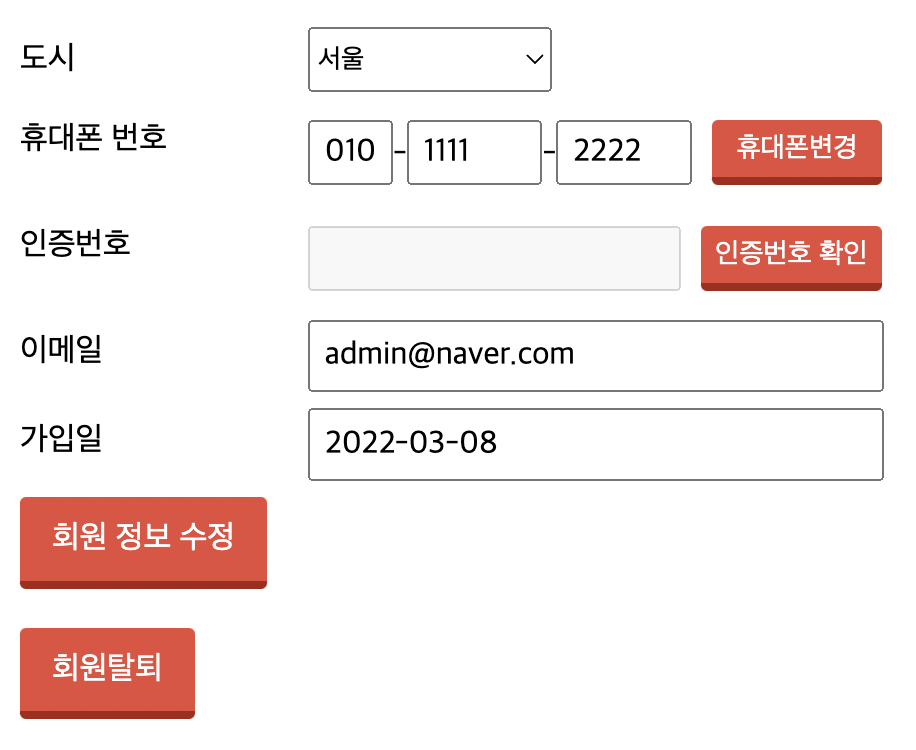

프로젝트) Cafe(웹 사이트) 만들기 9 - 회원 탈퇴 기능 구현
개발환경
- MacBook Air (M1, 2020)
- OpenJDK 8
- Eclipse 2021-12
- tomcat 8.5
- MySQL Workbench 8.0.19
시작
- 2022.3.4 ~
주제
- 웹 백엔드 수업 중 중간 과제로 개인 프로젝트를 진행하게 되었다.
- 회원가입/로그인/탈퇴 등 기본적인 회원관리 시스템을 가진 웹 사이트를 만드는 것이다. 주어진 기한은
한 달 - 나는
다음 카페를 소규모로 만들어 보기로 했다. 평소 자주 이용하기도 했고 과제의 평가 기준에서 요구하는 기능들을 다 담고 있기도 했기 때문에 이번 기회에 구현해 보면 그동안 배운 것들을 활용하기에 좋을 거 같았다. - 평가 기준에 사이트의 디자인 구현(HTML/CSS 등 프론트엔드)은 포함되지 않기 때문에 본인이 쓰고 싶은 HTML/CSS 템플릿을 구한 뒤 회원 관리 기능을 구현하면 된다.
진행상황
- 마이페이지에 접속해서 회원 탈퇴를 할 수 있는 기능을 만들었다.
myPage.jsp

<form action="./delete.me" method="post">
<input type="hidden" name="id" value="<%=dto.getId()%>">
<input type="hidden" name="pass" value="<%=dto.getPass()%>">
<button type="submit" class="btn">회원탈퇴</button>
</form>
- 마이페이지 하단에 회원 탈퇴 버튼을 추가했다.
- 바로 탈퇴 동작을 수행하지 않고
delete.me페이지로 이동해 비밀번호를 한 번 더 확인한 후에 진행할 것이다.
MemberFrontController.java
import java.io.IOException;
import javax.servlet.RequestDispatcher;
import javax.servlet.ServletException;
import javax.servlet.http.HttpServlet;
import javax.servlet.http.HttpServletRequest;
import javax.servlet.http.HttpServletResponse;
import com.project.cafe.api.sms.SmsService;
public class MemberFrontController extends HttpServlet
{
protected void doProcess(HttpServletRequest req, HttpServletResponse resp) throws ServletException, IOException
{
// 1. 전달되는 가상주소 계산
// 매핑된(.me로 끝나는) 주소를 받아옴
String requestURI = req.getRequestURI();
System.out.println("requestURI : " + requestURI);
// 매핑된 해당 프로젝트 주소를 구함
String ctxPath = req.getContextPath();
System.out.println("ctxPath : " + ctxPath);
// 매핑된 주소 - 프로젝트 주소 = 계속 바뀔 뒷자리 주소 구함
String command = requestURI.substring(ctxPath.length());
System.out.println("command : " + command);
System.out.println("C : 가상주소 계산 완료\n");
// 1. 전달되는 가상주소 계산
// 2. 가상주소 매핑
Action action = null;
ActionForward forward = null;
...
생략
else
{
forward = new ActionForward();
...
생략
else if (command.equals("/myPage.me"))
{
System.out.println("C : 마이페이지 호출");
forward.setPath("./member/myPage.jsp");
}
else if (command.equals("/delete.me"))
{
System.out.println("C : 삭제 확인 페이지 호출");
forward.setPath("./member/delete.jsp");
}
forward.setRedirect(false);
}
System.out.println("C : 가상주소 매핑 완료\n");
// 2. 가상주소 매핑
// 3. 페이지 이동
...
}
@Override
protected void doGet(HttpServletRequest req, HttpServletResponse resp) throws ServletException, IOException
{
doProcess(req, resp);
}
@Override
protected void doPost(HttpServletRequest req, HttpServletResponse resp) throws ServletException, IOException
{
doProcess(req, resp);
}
}
컨트롤러에서 삭제 전 비밀번호를 확인하는 페이지로 연결시켜 준다.
delete.jsp
<h3>회원탈퇴</h3>
<%
String id = (String)session.getAttribute("id");
if (null == id)
response.sendRedirect("./login.me");
%>
<form name="checkPass" action="./MemberDeleteAction.me" method="post" onsubmit="return finalCheck();">
<input type="hidden" value="<%=id%>" name="id">
<input type="hidden" value="delete" name="actionType">
<div class="formRow">
탈퇴하시려면 비밀번호를 한 번 더 입력해 주세요.
</div><br>
<div class="formRow">
<label for="MOD_TEXTFORM_NameField">비밀번호 </label><input id="pass" type="password" name="pass">
</div>
<button type="submit" class="btn">확인</button>
</form>
- 보통 로그인 된 상태로 여기까지 오겠지만 혹시 모르니까 로그인 정보가 없을 때의 예외처리를 해 주었다.
- 마이페이지 입장 전 비밀번호를 확인하는 페이지인
checkPass.jsp페이지와 동일한 구성이기 때문에onsubmit필드의 함수는checkPass.js의finalCheck()함수를 그대로 썼다.
MemberDeleteAction.java
package com.project.cafe.member.action;
import java.io.PrintWriter;
import javax.servlet.http.HttpServletRequest;
import javax.servlet.http.HttpServletResponse;
import javax.servlet.http.HttpSession;
import com.project.cafe.member.db.MemberDAO;
import com.project.cafe.member.db.MemberDTO;
public class MemberDeleteAction implements Action
{
@Override
public ActionForward execute(HttpServletRequest request, HttpServletResponse response) throws Exception
{
System.out.println("M : MemberDeleteAction - execute() 호출");
// 한글처리
request.setCharacterEncoding("UTF-8");
// 전달된 정보 저장
MemberDTO dto = new MemberDTO();
dto.setId(request.getParameter("id"));
dto.setPass(request.getParameter("pass"));
// DB 연결해서 삭제
MemberDAO dao = new MemberDAO();
int result = dao.deleteMember(dto);
// 삭제 완료 알림창 띄우고 메인페이지 이동
response.setContentType("text/html; charset=UTF-8");
PrintWriter out = response.getWriter();
if (1 == result)
{
// 탈퇴가 완료되면 세션 초기화 및 메인으로 이동
HttpSession session = request.getSession();
session.invalidate();
out.write("<script>");
out.write("alert('회원 탈퇴가 완료되었습니다.');");
out.write("location.href='./main.me';");
out.write("</script>");
}
else
{
out.write("<script>");
out.write("alert('비밀번호가 일치하지 않습니다!');");
out.write("history.back();");
out.write("</script>");
}
out.close();
return null;
}
}
- 회원정보 수정을 할 때와 마찬가지로 DB와 연결해서 회원 정보가 존재하는 지 확인한 후 결과에 따라 탈퇴 동작을 수행한다.
- 회원탈퇴를 했는데 로그인 상태로 남아있지 않게 하기 위해서
delete가 완료되면 세션 초기화를 해 주었다.
MemberDAO.java - deleteMember(dto)
public int deleteMember(MemberDTO dto)
{
int result = -1;
try {
// 1.2 DB 연결
con = getCon();
// 3. sql 작성 & pstmt 생성
sql = "select pass from cafe_members where id=?";
pstmt = con.prepareStatement(sql);
pstmt.setString(1, dto.getId());
// 4. sql 실행
rs = pstmt.executeQuery();
// 5. 데이터 처리
if (rs.next())
{
if (rs.getString("pass").equals(dto.getPass()))
{
// 삭제하는 쿼리문 실행
sql = "delete from cafe_members where id=?";
pstmt = con.prepareStatement(sql);
pstmt.setString(1, dto.getId());
result = pstmt.executeUpdate();
System.out.println("DAO : 회원정보 삭제 완료");
}
else
result = 0;
}
else
result = -1;
}
catch (Exception e) {
e.printStackTrace();
}
finally {
CloseDB();
}
return result;
}
- DB 접속 후 입력받은 회원정보가 DB에 존재하며 아이디와 비밀번호가 일치하는 지 확인한 후 삭제 동작을 수행한다.

- 이렇게 회원 탈퇴도 완료!
- 이제 게시판 만들어야지!
마감까지
D-14